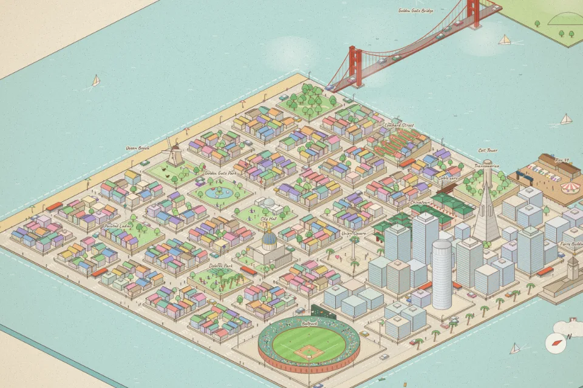
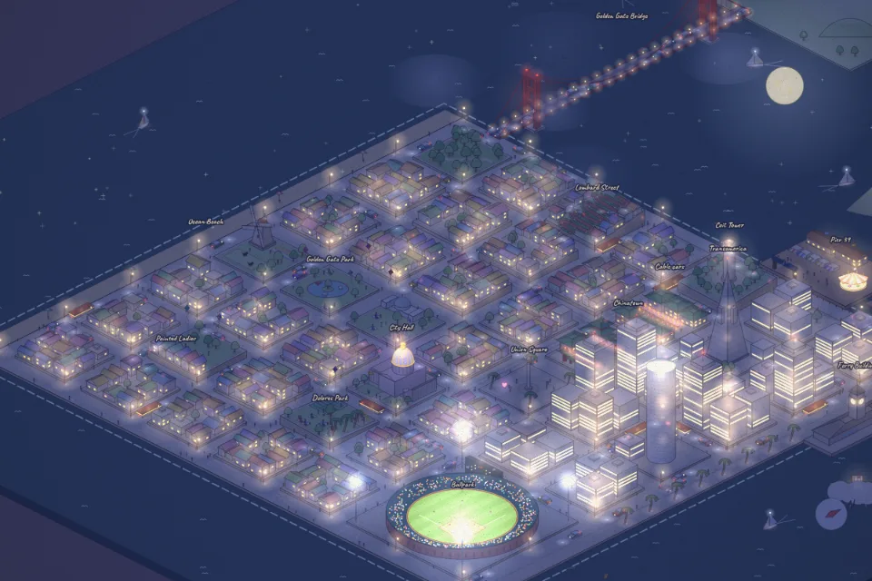
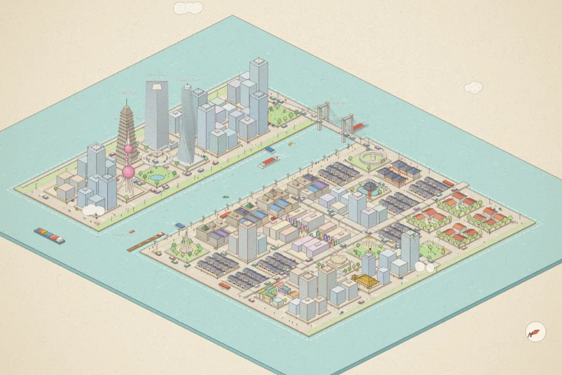
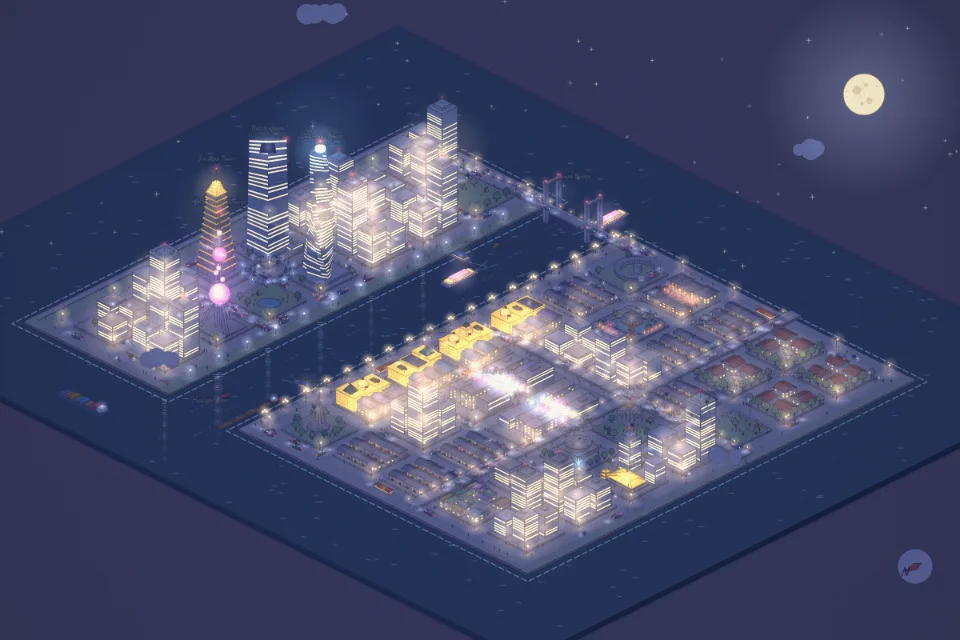
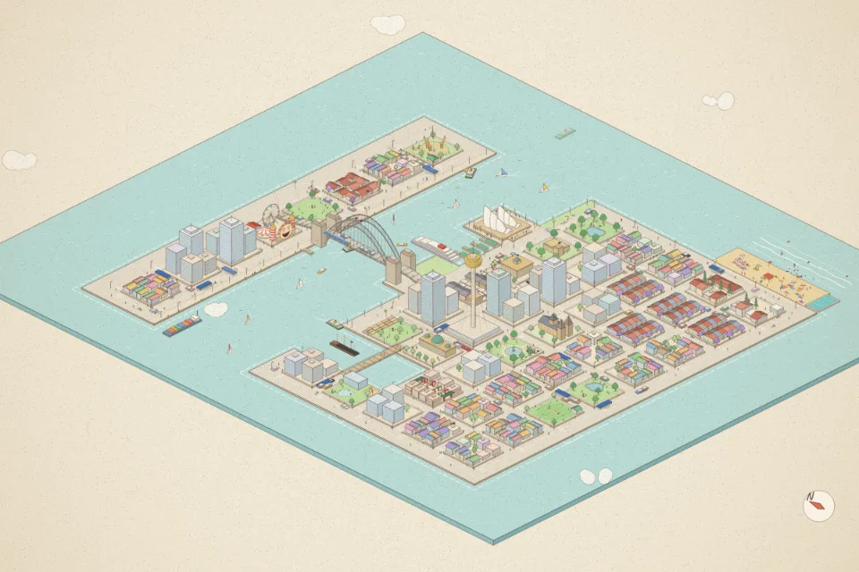
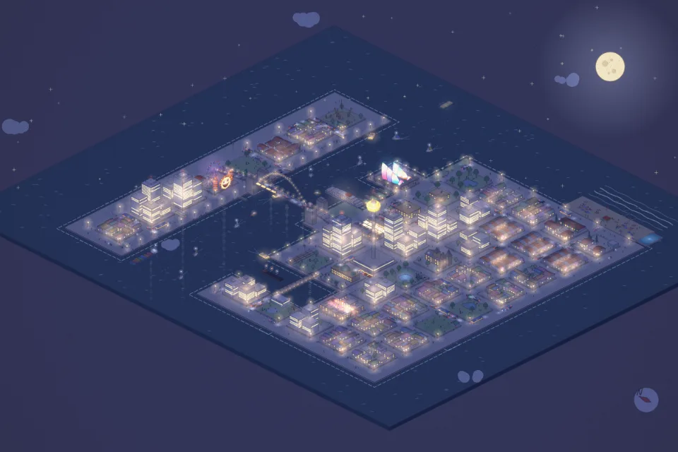
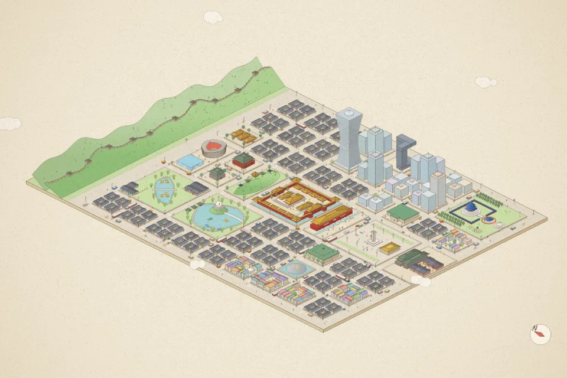
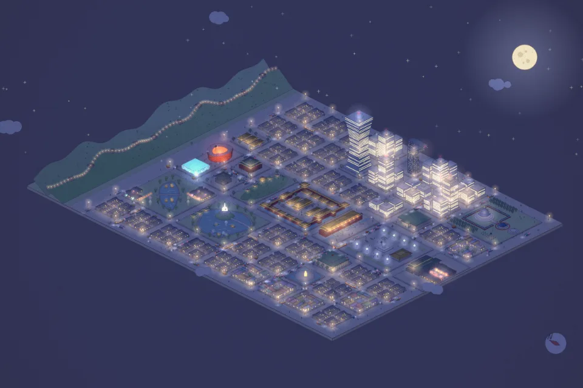
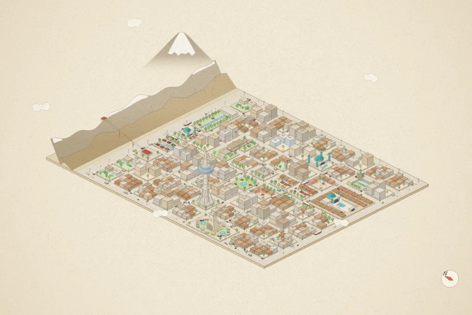
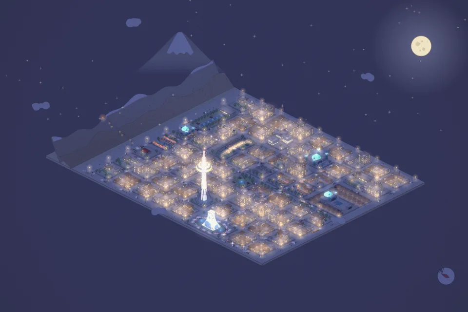

Little Cities
Pick a city and watch it build itself in 50 seconds.


San Francisco
37.77° N 122.42° WGolden Gate Bridge, cable cars up the hills, Painted Ladies, Chinatown lanterns, the ballpark and Pier 39.
Open the city

Shanghai
31.23° N 121.47° EThe Bund across the Huangpu, Lujiazui towers, Yu Garden, Nanjing Road, shikumen lanes and the Nanpu Bridge.
Open the city

Sydney
33.87° S 151.21° EThe Opera House and Harbour Bridge, ferries at Circular Quay, Luna Park, Paddington terraces and the surf at Bondi.
Open the city

Beijing
39.90° N 116.40° EThe Forbidden City and Tiananmen, the Great Wall on the hills, hutongs, Houhai's lanterns and the Temple of Heaven.
Open the city

Tehran
35.69° N 51.39° EAzadi and Milad towers, the snowy Alborz with Damavand behind, the Nature Bridge, the Grand Bazaar and Golestan Palace.
Open the cityMake your own city
Every map here was drawn by Claude Code with the mini-city skill. It's an open-source plugin: install it, name a city, and Claude writes the prompt, plans the map, builds the animation, screenshots each chapter to check it, and adds a tile for it to this page.
Get the skill on GitHub# inside Claude Code, install the plugin
/plugin install mini-city --marketplace southpolemonkey/mini-city
# then ask for any city
/mini-city Tokyo